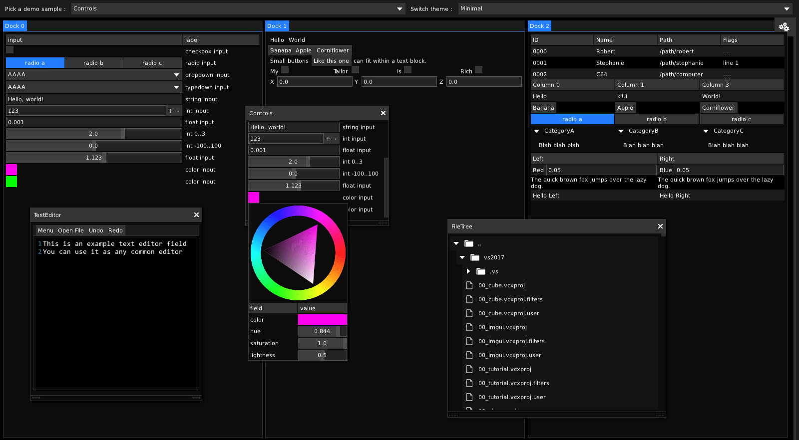
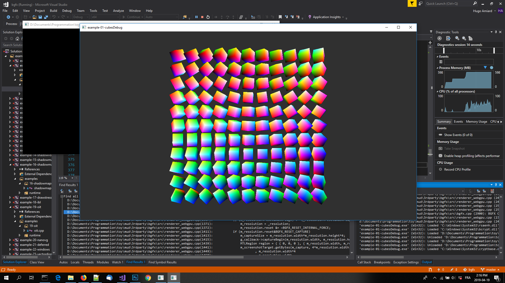

STL migration and compile-time improvements
A long-standing issue and challenge in finalizing two was to achieve what we call decent compile times. Which is the main item that led us to migrate from the STL.
The most essential step in achieving decent speed, we found out, is to be able to separate template class declarations from their implementation, and instantiate those only in a few select translation units. This cannot be done with the regular STL because of the way it's structured (in monolithic headers)
For this reason, we replaced 99% of our STL usage with our customized flavour of tinystl. Doing so, we drove compile times down from more than 4 minutes to about 40 seconds (with a bunch of other tweaks). Vanilla STL can still be used through a compiler switch.
The next logical step has been to provide amalgamated single-file versions of each module of the library, for which we wrote a quick and simple amalgamator. Using these files, compilation time can be driven down even further, to about 10 seconds (by including all modules implementations from one single translation unit).
leaner graphics library
An important condition to bringing two to its first officially stable iteration, is ensuring a varied set of classic 3D graphics examples work correctly and reliably. This is what led us to to implement a selection of various three.js examples. In the process, we ensured two can do mostly anything that three.js can do. (note: If you want to familiarize yourself with the library, porting more of those examples is a great way to do so!)
In the process, we solved one of the last remaining design issues, and un-inverted the infortunate inversion of control OOP design of the renderer, which used to delegate rendering tasks to a loosely coupled sequence of passes, and made it quite harder to do control rendering directly.
A renderer is now a simple function which you compose and implement in any way you want using the render primitives and built-in passes. As a result, writing your own rendering/post-processing logic is now way simpler than it used to be, and the effects examples demonstrate that nicely.
As a result the graphics API is now much closer to the top-down, don't invert control but rather layer APIs of increasing complexity idea which is our preferred philosophy of minimal software design.
A range of other features were also introduced, including morph targets, point light shadows, atlasing of all shadows in a single atlas, cube environment maps, reflection probes, more built-in shapes (tetrahedron, icosahedron, torus etc), and curves/lines/points rendering support.

codegen moved to native and javascript binder
One of the key strenghts of the two library, is its extensive reflection facilities, enabled mainly by a C++ parser and code generator tool, which is used to generate higher level meta descriptions of all modules in the codebase and their contents.
The generator, originally in python, has just been completely rewritten in C++ (now using the C API of libclang directly), to ensure its robustness and to make sure that extending it with new generators is a much more fail-proof process. It was a necessary step to implement a generator of JavaScript bindings for the whole codebase.
Given that none of the existing solutions provided by Emscripten (namely Embind and WebIDL binder) provided all the features we needed, and since both of those solutions need an intermediate level of binding code/interface definition that would need to be generated anyway, we instead opted to directly generate the binding code itself, largely reusing the patterns used by those existing binders, but hooked straight to our generator.
The implementation cost was a little bit higher, but the result is much, much more powerful. We practically have a generic C++ to JS binder, with simple annotated C++ code as input. The output is two files per module: the C glue code that binds the functions, methods, members, enums etc, and the JS bindings wrapper. The C glue code can be reused in the future to bind other languages such as C#.
dusting off the UI library
The UI library is the flip side of two, a neat piece of engineering. It combines an immediate-like declarative API with all the layout and styling power of a retained UI solution. As far as development goes, this part of library is much older, and as such it was already that much closer to a stable state. Some of the recent work has been dusting off some neglected parts of it, and implementing a new dear imgui theme and example.
Similarly to how three.js is a standard to strive to equal on the graphics side, we want to ensure our UI library is at least as robust and reliable as dear imgui. By implementing both the same theme and the same example UI, we can ensure the quality of our solution, by allowing both to be compared both side to side, and ensuring that the two version behaves just as well.
The distance that separates us from a first stable version lies in fixing a few remaining issues and flaws in the internals of the library. The API has been mostly stable for the last months, so we are pretty close.

webgpu prototype
This item is a bit like our own 20% project, on the scale of two. It wasn't practically needed for any short-term goal of the library, but it might prove to be a great investment in the future of the web. So, we allowed ourselves to start working on a first webgpu prototype.
The low-level foundation on which two graphics are built, bgfx, abstracts different rendering backends in a nice declarative API. To advance on this task meant implementing a new experimental webgpu backend for it, which also presented itself as a great way to get familiar with the more modern explicit APIs that are D3D12, Vulkan, Metal2.
Even though it is nowhere near complete, we advanced enough that a few of the basic bgfx examples run correctly on top of dawn, google's implementation of the current state of the webgpu specification.
This means that, as soon as browsers start providing access to webgpu, two will be on the front-line as one of the first libraries to support it, so that, pretty soon, apps using two can leverage the full power of your gpu, even in the browser.
If you are curious, the current state of the webgpu backend source for bgfx can be found here.

last steps to v0.1
As of the present post, the master branch of two is now officially the stable branch, although it will only be truly so once we can tag the first release. This means that two is now in a phase of last refinements and polishing with that milestone in sight. The plan is to use the following weeks/months to let the remaining issues emerge and be fixed, and gather an more precise picture of what flaws in the API the user encounter, and how it should ultimately be.
This is a necessary step in order for people to finally be able to use a version of two worth using, so we look forward to it being completed.
So, see you soon in the issues section of the github repo :)